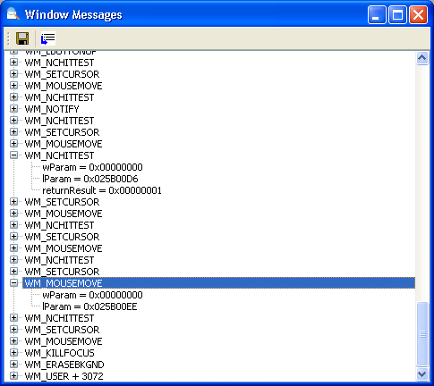

Aby w³¹czyæ funkcjê nas³uchiwania komunikatów wysy³anych do okna, nale¿y klikn¹æ prawym przyciskiem myszy nazwê okna w widoku drzewa i wybraæ polecenie "Komunikaty".
Od tego momentu w nowo otwartym oknie bêd¹ wyœwietlane wszystkie komunikaty wysy³ane do wybranego okna. Informacje zawieraj¹ nazwê komunikatu (zgodnie z nazwami systemu Windows) i parametry (wParam, iParam) wraz ze zwróconym wynikiem.

An example of the Messages dialog.